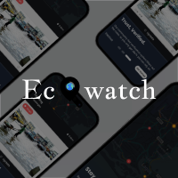

Mobile App
Ecowatch
Ecowatch is a community-powered safety application designed to keep users informed about environmental hazards, accidents, and civil unrest in real time. This project is a complete overhaul of an app I originally designed a year ago. As my design maturity evolved, I realized the initial concept prioritized "social engagement" over "safety utility." I revisited the project to solve the core user problems of speed, trust, and clarity.
View Details